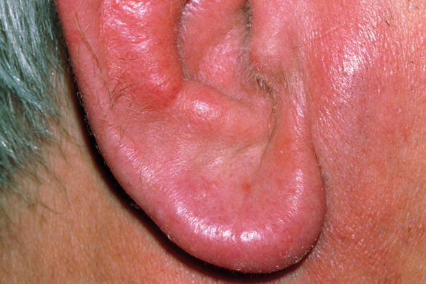

Relapsing Polychondritis

CAUSES
- Doctors don’t know what causes RP. Some think a certain gene may make you more likely to get it, but it doesn’t run in families.
- It’s considered an autoimmune disorder. That means your immune system attacks healthy tissue by mistake. Researchers think some cases might be triggered by stress or things in the environment.
DIAGNOSIS
You might get a blood test for signs of inflammation. X-rays can make the affected areas show up better.
To find out for sure if you have RP, your doctor might look for three or more of these:
- Inflammation of the cartilage in both your ears
- Inflammation of the cartilage in your nose
- Inflammation of the cartilage in your airway
- Arthritis in five or more joints at the same time
- Hearing or balance problems
- Eye inflammation
TREATMENTS
- Anti-inflammatories (like Motrin or Advil) can help with pain, especially for people who have a mild case of RP.
- Steroids (like prednisone) or other kinds of drugs to help with inflammation.
- Stronger drugs that slow down your immune system. And depending on how serious your case is, and which organs are affected, you might need surgery to fix a damaged heart valve or put in a breathing tube.